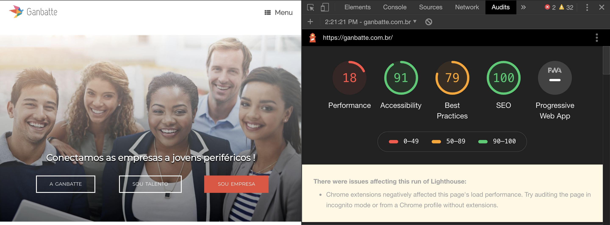

UX UI design for a Growing startup
Ganbatte an H&R consultancy focused on diversity
This is a project made for Ganbatte a growing startup in Rio de Janeiro Brazil.
"How might we help Ganbatte to scale its business and be known as the best Talent Acquisition consultancy focused on diversity in Brazil."
Objective
Help ganbatte to increase the impact and gain business scale.
The Problem
Ganbatte is in the process of maturing it's business model, client companies and young people who participate in selection processes approve the approach but new Ganbatte is findind obstacles for expanding and scale the business.
The Solution
Elaborate a complete analysis of the current platform and Ganbatte processes and bring a solution aligning business with the market and users needs.
My Role
User Experience Strategist and Project manager for the new positioning of ganbatte. Developing all these tasks: Team management, Planning, User Research, Wireframing, Usability Tests and High-fidelity Prototype.
Team
Team for this project: me Thais Avelino as UX-UI strategist and Project Manager; Izabella Maroni as UX-UI designer; Adriano as content marketing; Leandro Jardim as talent Acquisition consultor; Karen Franquini as CEO.
Prototype
Here is the Prototype of sprint 1
Click here to acces the prototype online and interact with it.You can also check the video of the prototype working:
Intro
Ganbatte is a Japanese word that means "don't give up, keep working" it's like "bon courage" in French it's hard to translate, but has a strong meaning.
Ganbatte is the name of a talent acquisition consultancy in Brazil that is focused on diversity helping low income young people from some minority groups (LGBTQI+ black people, women, Disabled people) find a job they dreamed about.
Ganbatte - The history of the company
Ganbatte is a social impact company created by Karen, a young Brazil woman from Rio de Janeiro that faced the social problems by herself. In 2016 I had the pleasure to met Karen and start to help Ganbatte company. At that moment Ganbatte was a online education company that was trying to help young people from some minority groups to get some skills for find a job.
After a while we realize that the biggest obstacle for young people to get jobs was not lack of education, but the way companies do selection processes. Then Ganbatte changed the focus and became a recruitment and selection consultancy company.
The UX process
1 - Check actual Website
As I was not into the website project at Ganbatte before, I needed to first understand what was going on with the website. So the first thing I did was to check Google Audits and Google analytics tools.
Google Lighthouse
First I runned Lighthouse plugin on Google Chrome to check performance indices of Ganbatte website and understand what works well and where the website needs an improvement. In this report we could see that response time needs a improvement but SEO is applied in the best possible way, what is good sign, but besides the SEO is well applied I also like to check google analytics to understand more about the key words and see if we need some improvements on digital market area.
Google Analytics
Google Analytics provides valuable insights is used to improve website performance and increase conversion. For this project I checked Google analytics to understand the website SEO strategy company was using and get more information about site traffic and user behavior.
So I could know the age, gender, interest, device and location of website audience and get some answers like: how long users stay in website? Which device they use? Where they come from? why visitors are bouncing off our website? Which social platforms they prefer ? What kind of content we should write? Are we achieving goals?
With all this data I could decide the KPI for measuring the results of new website project and also help the marketing team with their strategies.
2 - User Research
During the user research we talked with 2 different users: Recruiters and young people (from diversity groups) that are looking for a job. So we could get the insights for the platform.
For respect Ganbatte privacy I can not put the research here.
3 - Benchmark
For the benchmark, was made an analysis of recruitment platforms from different countries to understand the strengths, weaknesses and opportunities on their project interfaces.
For respect Ganbatte privacy I can not put the table here.
4 - Listing Features and Ideas
After all the analyzes, the ideas from the previous processes were listed, in addition I also runned crazy 8 and brainstorm with the team to get more ideas for the project.
After that we got a list of features for the new system and tasks to achieve the objective.
For respect Ganbatte privacy I can not put the table here.
5 - Prioritizing - Creating a Cronogram
Time management is important for any project. So I was using Scrum with my team to organize tasks for each week, called sprint.
For prioritizing tasks I created a table with the list of features created before.
With this list I created a scoring system and invited the whole team to vote. So in the end we could be able to take out which tasks were most urgent and POSSIBLE to do with the current time and team we had.
After this I created the schedule with the tasks for each sprint.
For respect Ganbatte privacy I can not put the whole table here.
For the first sprint we had:
- Landing page redesign (UI by Izabella Maroni)
- Create the H&R platform (UI by me, Thais Avelino)
- Formulary for post new job opportunit
- Company profile page
6 - Prototype
UI of the Sprint 1
Here is the video of our prototype done during Sprint 1
Check our website to see the whole project www.ganbatte.com.br.